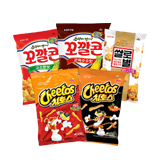
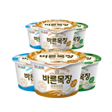
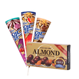
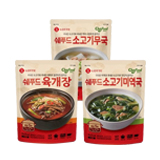
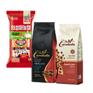
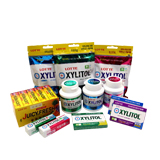
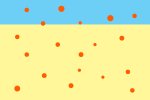
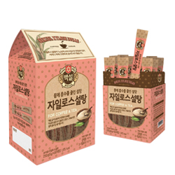
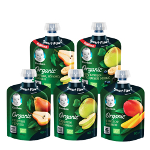
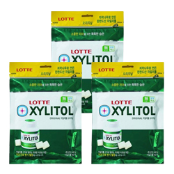

인쇄/포장
식품용 포장재
내용물들의 맛과 안정성을 유지함과 동시에 껌, 스낵, 아이스크림, 햄 등 각종 식품류의 고유한 특성을 표현하고 그 맛과 풍미를 정확하게 유지 할 수 있는 재질을 개발, 공급하고 있으며 최근에는 친환경적인 재질을 개발, 적용하고 있습니다.
-

- 스낵 & 비스킷류
- 밀봉성, 열접착성, 내유성이 우수하고, 보존성을 높인 포장재입니다.
-

- 요거트류
- 내수성 및 용기와의 Easy peel성이 높인 우수한 포장재 입니다.
-

- 빙과 & 캔디 & 초코렛류
- 내한성 및 내수성이 우수하며, 개봉이 용이하도록 설계 되었습니다.
-

- 레토르트류
- 내용물 고온 살균을 위한 접착성, 내열성, 내수성, 우수한 포장재 입니다.
-

- 커피 & 햄류
- 미생물 번식을 제한하여 보존성이 뛰어나며, 제품 개봉이 용이합니다.
-

- 껌류
- 내용물의 향 보존성이 우수한 재질로 설계 되었으며, 꺾임성이 우수합니다.
약품용 포장재
내약품성과 Barrier성(산소, 수분투과)이 우수하여 약효의 장기보존에 적합한 포장재로써 인체에 유해하지 않은 포장재질을 사용하며, 개봉이 용이하도록 설계하여 사용자가 손쉽고 빠르게 제품을 섭취 할 수 있도록 제작된 포장재 입니다. 주로 현탁액 의약품에 적용(제산제, 진해거담제 등)에 이용됩니다.
- 내약품성 비교
-
- 일반 Film 적용시
- 
-
- 당사 개발 Film 적용시
-

파우치류 포장재
-
- flat bottom pouch
- 자립안정성이 우수하여 제품 진열 효과 증대되며, 5면 인쇄 가능하여 디자인 차별화 구현 가능 합니다. 또한, 다량의 내용물이 충전 가능하여 M자형 봉투 대비 원자재 10 ~ 15% 절감 가능
- 
-
- transformed pouch
- 내용물의 특징을 표현할 수 있는 외형 디자인 설계가 가능한 Pouch 입니다. 뿐만 아니라 Spout 부착을 통해 소비자 음용이 편리 보관 및 휴대성이 용이(Cap을 통한 밀봉 가능)하여 다양한 제품에 적용됩니다.
- 
-
- pocket zip
- One Side Zipper 구조로써 소비자가 내용물 충진이 편리한 신개념 Zipper를 제품에 적용 가능합니다. Open Tape을 적용하여 소비자 개봉이 용이함 내용물 충진 시 지퍼를 열고 닫아주는 설비 불필요
-
- 
용기류 포장재
인쇄성 및 내수성이 우수한 고광택 종이 용기 입니다. 제품 광택 및 인쇄 효과 우수하여 PE 코팅없이 용기 성형 가능합니다. 또한 내한성 및 내수성이 우수하여 수분침투 방지가 가능하여 주로 아이스크림, 스낵, 컵라면, 음료 등에 쓰입니다.
| 구분 |
투습도 (g/m^2 24hr) |
산소투과도 (cc/m^2 24hr) |
|---|---|---|
| 기존 | 16 ~ 22 | 5 ~ 8 |
| 고광택 용기 | 7,000 ~ 8,000 | 1,500 ~ 2,000 |